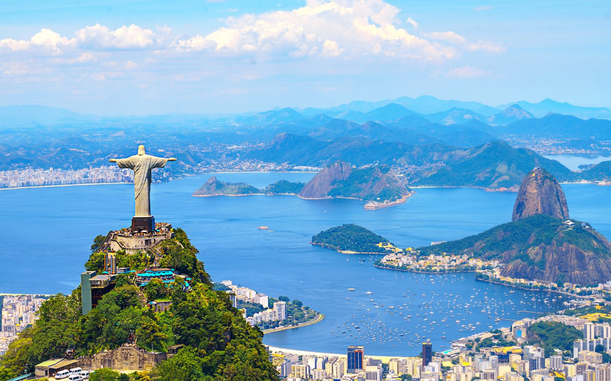

BIENVENUE A RIO DE JANEIRO
RIO
Rio de Janeiro est une grande ville du Brésil située en bord de mer. Elle est connue pour ses plages de Copacabana et
d'Ipanema, sa statue du Christ Rédempteur de 38 mètres. La ville est également connue pour ses favelas tentaculaires
(bidonvilles). Le célèbre carnaval de Rio, avec défilés de chars, costumes flamboyants et danseurs de samba, est considéré
comme l'un des plus grand au monde.
Statue du Christ
Redompteur

La plage de Copacabana est une plage de la ville de Rio de Janeiro, au Brésil.
Considérée comme l'une des plages les plus célèbres du monde, elle est surnommée
en portugais la Princesinha do Mar, soit la « princesse des mers ». Elle est l'un des
emblèmes touristiques de la ville, comme le Corcovado ou le Mont du Pain de Sucre..

Le Carnaval de Rio est l'événement touristique le plus important de la municipalité de
Rio et la fête nationale la plus populaire au Brésil, en particulier à Rio de Janeiro.
Il a lieu tous les ans durant les 4 jours qui précèdent le mercredi des
Cendres, qui est le jour qui marque le début du carême.